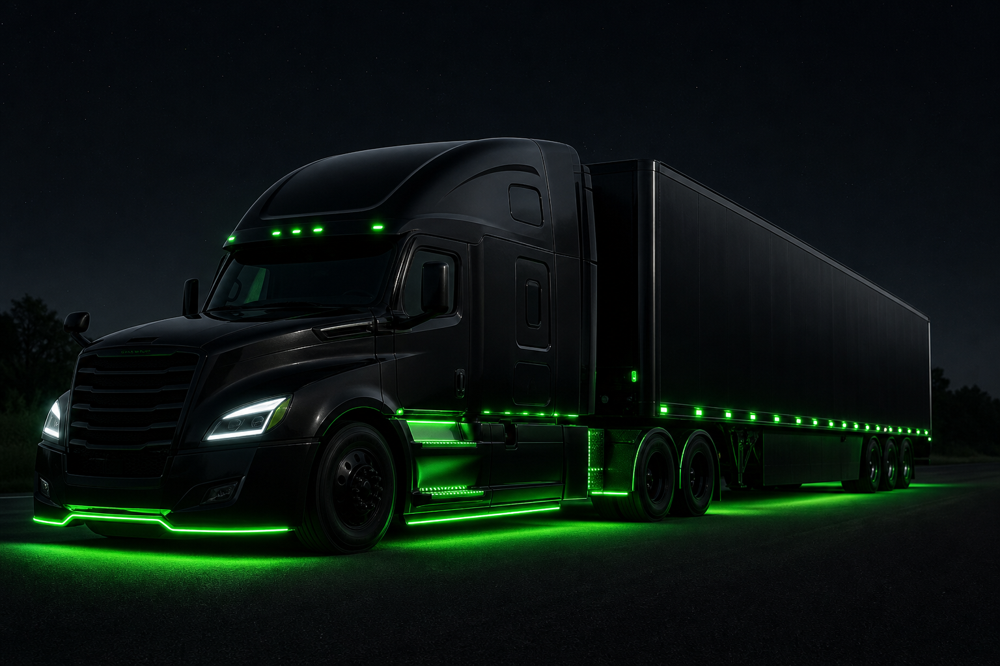

Motorista registra a pane
Tipo de problema mecânico e localização GPS em segundos.
Gestão de ocorrências para frotas
Conecte motoristas e gestores a oficinas próximas via GPS. Reduza o tempo parado da frota com atendimento rápido em rota.

Dados da frota e das ocorrências protegidos, com acesso controlado para gestores e motoristas.
Localize oficinas próximas em segundos e reduza o tempo parado do caminhão na estrada.
Rede de oficinas em diferentes regiões, com busca por GPS, especialidade e raio de distância.
Acompanhe status e atendimento da ocorrência com o time sempre a par da operação.
Tipo de problema mecânico e localização GPS em segundos.
Busca por distância, especialidade e horário de funcionamento.
Vínculo da oficina escolhida com a frota e status resolvido.
Modelo de negócio
Planos adaptados ao tamanho da operação.
Até 10 caminhões
Pequenas transportadoras
11 a 40 caminhões
Médias transportadoras
Acima de 40 caminhões
Transportadoras de grande porte
Criamos um modelo escalável para atender transportadoras de diferentes portes, acompanhando o crescimento da operação.
Diferencial
| Google Maps | Busca Manual | FixTruck | |
|---|---|---|---|
| Encontrar oficinas próximas | |||
| Filtrar por tipo de problema | |||
| Disponibilidade de guincho | |||
| Histórico de atendimentos |
Enquanto outras ferramentas mostram localização, o FixTruck ajuda na tomada de decisão.